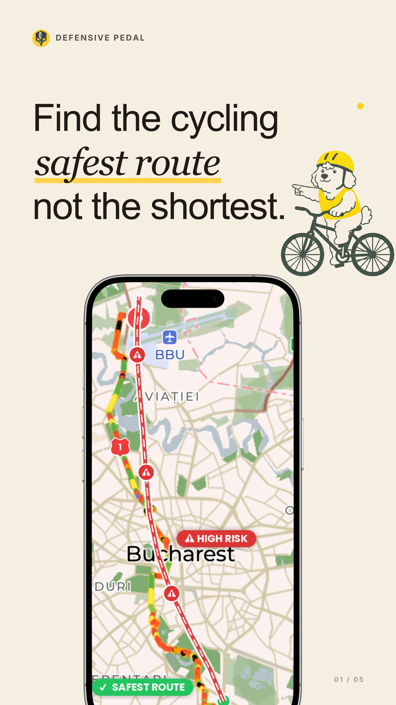
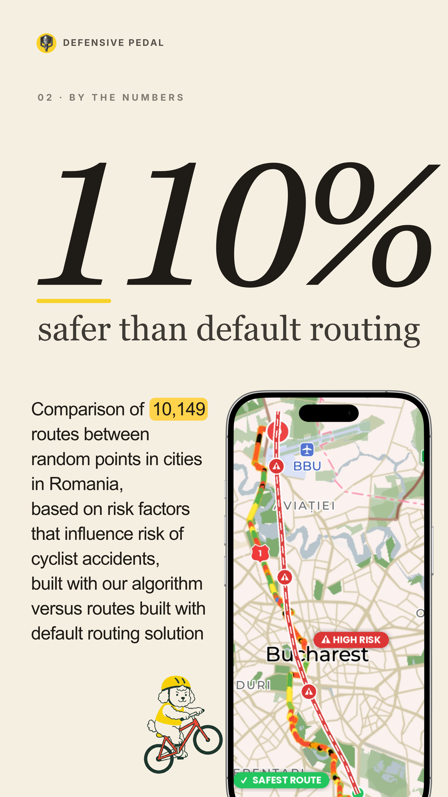
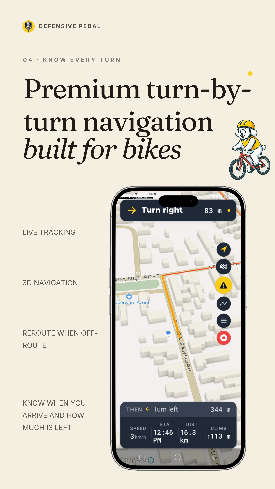
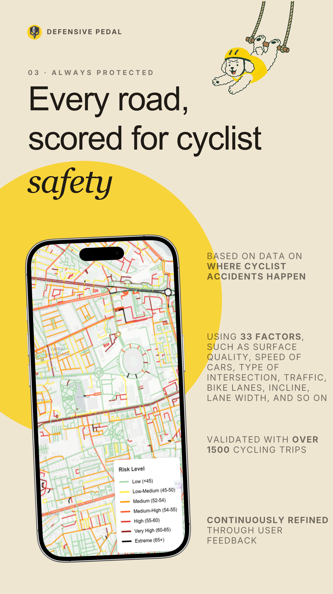

6 : 1
You’re not alone
Six people want to cycle for every one who does. Traffic is what holds them back.
Defensive Pedal is a free cycling app that plans your ride around fast traffic, tricky junctions and dooring zones, using 100+ risk factors on every street. On average it’s just 5% longer than the shortest route.
Free · iPhone & Android · 31 European countries
5.0 on Google Play · 3,984 installs on Android and iPhone · Works with the World Bank on cycling intelligence for cities

For every person who cycles, six more would, if the streets felt calmer. Default maps send you down the fastest roads. We send you down the calm ones.
Six people want to cycle for every one who does. Traffic is what holds them back.
Cyclist deaths in the EU fell 8% between 2014 and 2024. Deaths of drivers and passengers fell four times faster (ETSC PIN Flash 50, 2026).
Cyclists are 10% of all people killed on EU roads: 1,926 in 2024 alone (ETSC PIN Flash 50, 2026).

We compared our routes with Google Maps’ cycling directions on 10,149 trips between random points in Romanian cities.
Ours came out lower-risk on 99 of every 100. On average, they’re
Measured as cumulative modelled risk along each route, using 100+ road-risk factors per segment. On average just 5% longer than the shortest route.
A risk score only matters if it matches what happens on real streets. So we checked ours against five countries’ national crash registers, and we publish what we got wrong, too.
Counted at 2,034 roadside sensors in the five countries, so each street’s injuries are weighed against how many people ride it.
Germany, Switzerland, Belgium, France and Spain. None of this data was used to build the model.
2.19 times as many serious injuries per ride on the streets we rate High risk as on the streets we rate Safer.
Treat the scores as a guide. Cycling is safe overall; the scores compare streets with each other and say nothing about any single trip. Crash data comes from independent national sources; the analysis is our own, published with open access (Rotariu, 2026, Zenodo). The methodology page lists every factor family and the full validation figures.


Every street on the map already has a risk rating (Safer, Typical or High risk) built from 100+ factors like traffic speed and volume, junctions and dooring zones.


We skip busy roads and tricky junctions, and tell you why the safer route is safer. On average it’s just 5% longer than the shortest one.


Potholes, hostile merges and risky junctions are flagged before you reach them, and you’ll get a warning when the weather means gearing up.
Other apps treat cycling as slow driving and send you down the same roads. We score each street for cyclist risk and route around the worst of it.

Hot day? Get the shadiest, coolest route home. Part of Premium, along with e-bike routing, unlimited saved routes and offline navigation.

Choose how far you’ll detour for a calmer street, from the safest route to a balance with speed. Change it any time.

Tell the app once whether you ride an e-bike, avoid hills or want the direct route, and every route follows those settings.

Spotted a pothole, a sketchy intersection, or a glass-strewn lane? Tap to report. Other riders see it instantly.

Analytics are opt-in and GDPR-compliant. Your trips are yours. We never sell personal data.

After each ride, see the CO₂ you avoided and the minutes of life you gained, estimated with the WHO’s health model when your ride replaces a car trip.
I was amazed I could actually feel safe while cycling in Bucharest.
I like that it focuses on finding safer bike routes and takes real road-risk factors into account, instead of simply sending you on the fastest path.
I like how it considers practical factors like traffic conditions, hazards and weather, and gives you a warning in case you need to gear up for the weather.
Programmes & collaborations
Featured in
So we built the app we both needed. Victor Rotariu, a lifelong cyclist who shipped Romania’s largest chatbot, founded Defensive Pedal and coded its routing engine and both apps. Oana Leta, former U.K. Country Manager for iRobot with deep urban-policy experience, leads our partnerships and work with cities.
Between 2024 and June 2026, 2,400 cyclists shaped the safety model: they tested the algorithm at events, answered our surveys and sent feedback online.

Yes. Safety routing is free with no limit on rides. Premium adds Cool Routing, e-bike routing, unlimited saved routes and offline navigation.
Not much. On average, our routes are just 5% longer than the shortest route. On a 4 km ride, that’s about 200 metres.
Yes. You create a free account when you first open the app.
Yes. It’s built for everyday city riding, commute included. E-bike routing is part of Premium.
Battery use is in line with other GPS navigation apps. For rides over a couple of hours a power bank or handlebar charger helps, as with any turn-by-turn app.
Yes, if you are in Europe. Defensive Pedal is available in 31 countries: every EU country plus the UK, Switzerland, Norway and Iceland. Coverage is strongest in major European cities. How detailed the safety scores are depends on local OpenStreetMap data, which improves as riders report hazards.
Yes. Defensive Pedal is on the App Store with the same routing as on Android. Thank you to everyone who joined the waitlist.
The model scores each street segment on 100+ risk factors drawn from European road-safety research, OpenStreetMap infrastructure data and hazards reported by riders. We checked the scores against the national crash registers of Germany, Switzerland, Belgium, France and Spain. Streets we rate High risk see 2.19 times as many serious injuries per ride as streets we rate Safer.
We collect what routing needs and nothing else. Analytics are opt-in and GDPR-compliant, and anything shared with cities is aggregated and anonymised. We never sell personal data.
We ranked 117 European cities by cycling risk, street by street. Find yours, then send it to someone who’ll want to argue about it.
See the city ranking →
Install free on Google Play or the App Store. Safety routing costs nothing and you don’t need a card.
Android & iOS · Free · 100+ safety factors · 2.1x safer routes
Know someone who says “I’d cycle, but…”?